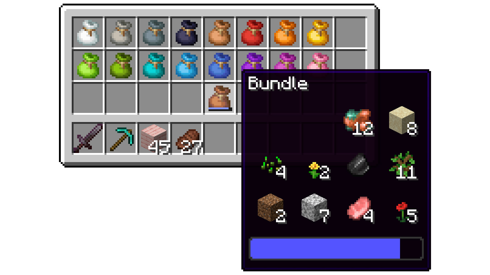
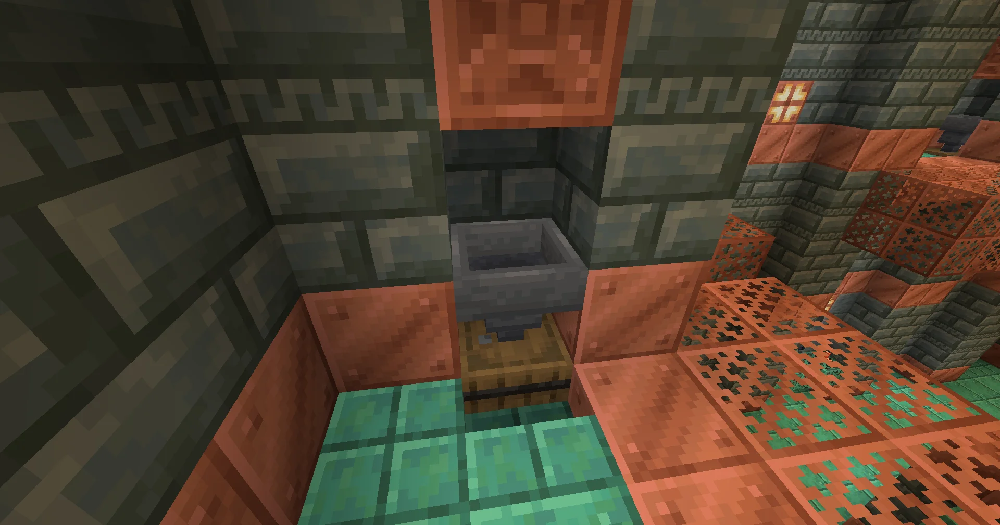
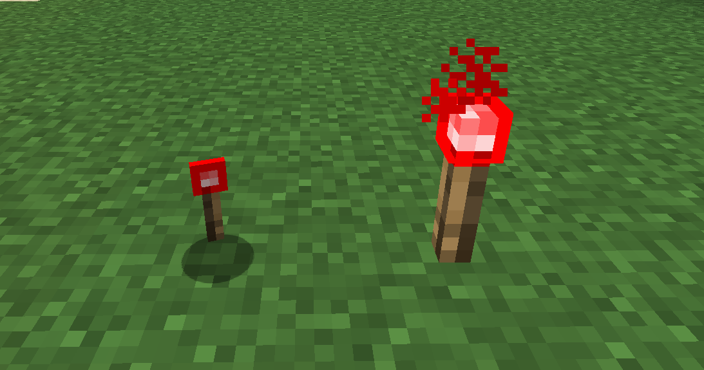
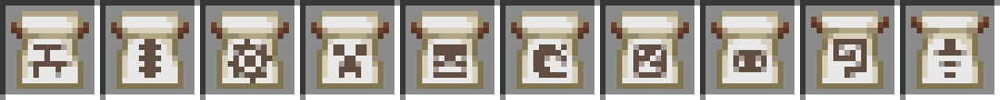

Actualité
Minecraft 1.21.2 : Bundles of Bravery

La version 1.21.2 de de Minecraft aussi nommée Bundles of Bravery, est désormais
disponible dans votre launcher.Cette mise à jour introduit pleinement le sac
dans le jeu, qui était déja présent, mais caché, dans le jeu depuis Minecraft
1.17 il y a maintenant 4 ans.Il a également subit quelques améliorations.
Cette version introduit également de nouvelles fonctionnalités expérimentales pour le drop
hivernal (jardin pâle), la redstone et les wagonnets. Cependant,celles-ci ne seront pas abordées
dans cet article. Elles seront exclusivement mentionnées dans les versions correspondantes.
Trailer du drop « Bundles of Bravery » :
Sommaire
Ajouts et modification
- Sacs
- Rareté des objets
- Chambres des épreuves
- Entités
- Blocs & objets
- Divers
Éléments techniques
Téléchargement de la version 1.21.2
 Ajout et modification
Ajout et modification
Pour rappel, un sac est un objet qui peut contenir qu’une seule pile (généralement 64 objets), mais
il peut s’agir d’un mélange de plusieurs types d’objets différents. Et les objets peuvent être
ajoutés directement dans l’inventaire.
Le sac peut désormais être fabriqué et être présent dans l’inventaire créatif sans activateur
expérimental.
Les objets contenus dans les sacs sont indiqués dans l’infobulle.
- Si un sac contient jusqu’a 12 types d’objets, ils seront tous affichés.
-
Si le sac en contient 13 et +, les premiers types d’objets placés seront cachés.
Il est désormais possible de sélectionner n’importe quel objet visible pour l’extraire du sac.
- La molette de la souris permet de sélectionner un objet, puis un clic droit permet de le
prendre.
- Un simple clic droit permet de prendre le premier objet.
- Lors de la sélection, l’icône du sac montre l’objet dépassant du sac.
Faire un clic droit avec un sac en main permet de jeter au sol l’objet le plus récemment placé dans
le sac.
Le sac peut maintenant être fabriqué avec une ficelle au-dessus d’un morceau de cuir au lieu de 6
peaux de lapin et deux ficelles, ce qui était trop cher.
Le sac peut désormais être teint de 16 couleurs différentes.

Rareté des objets
La rareté est un ensemble de catégories qui déterminent la couleur utilisée pour afficher le nom
d’un objet ou d’un bloc.
-
Elle n’a pas d’impact sur le jeu, mais est utilisée pour indiquer la difficulté d’obtention d’un
objet.
- Par défaut, sauf indication contraire, tous les objets et blocs ont une rareté commune qui
affiche leur nom en blanc.
La rareté de tous les objets et blocs du jeu a été réévaluée en fonction des facteurs suivants :
- Les chances de les trouver dans une table de butin, incluant les objets lâchés par les
créatures.
- le nombre de déplacements nécessaires pour l’obtenir
- la difficulté des obstacles à surmonter pour l’obtenir
- La quantité possible de cet objet ou de ce bloc dans le monde.
Tout objet ou bloc qui peut être fabriqué hérite de la rareté la plus élevée de ses ingrédients de
fabrication
Chambres des épreuves
Ajout de nouvelles variantes aux couloirs dans les chambres
des épreuves, dont les «Encounter» : De petites épreuves menant à une chambre plus
grande.
Les lits situés aux intersections ont désormais des couleurs aléatoires.
Les coffres vides à l’entrée des chambres ont été remplacés par un tonneau et un entonnoir
afin
de mieux montrer aux joueurs que c’est destiné à la gestion de l’inventaire.

poubelle des épreuves
Entités
Les perles de l’Ender lancées chargent désormais les chunks.
- Elles s’assurent que le chunk dans lequel elles se trouvent/elles voyagent est toujours chargé
et en état de fonctionnement.
- Elles chargent également les chunks lorsqu’elles passent dans une nouvelle dimension.
- Cela garantit que les perles de l’Ender peuvent toujours atterrir et rend les déplacements des
perles entre les dimensions plus prévisibles.
Les perles de l’Ender sont désormais déchargées lorsqu’un joueur se déconnecte, et réapparaissent
lorsque le joueur se reconnecte, à l’instar des montures.
Ajout des bébés dauphins, poulpes et poulpes luisants.
Ajout des saumons de petite et grande taille.
Les chauves-souris peuvent désormais apparaître à n’importe quelle hauteur, et non plus seulement
sous le niveau de la mer, à condition qu’il fasse suffisamment sombre et qu’il y ait un bloc solide
sur lequel elles peuvent apparaître.
Les loups
peuvent désormais être nourris de morue, morue cuite, saumon, saumon cuit, poissons tropicaux,
poisson-globe et de ragoût de lapin comme sur Bedrock.
le Breeze n’a
plus de distance minimale requise pour attaquer une cible.
Lorsqu’une créature passe d’un type à un autre (ex : Piglin en Piglin zombifié), la santé de la
créature convertie est fixée au même pourcentage de santé que la créature originale avant la
conversion.
Les projectiles tels que les flèches, les tridents et les flotteurs de pêche rebondissent désormais
sur la bordure du monde.
Blocs & objets
La torche de redstone a été relookée, afin de lui donner une identité unique et distinctive.

S’accroupir en tombant sur un bloc de slime n’inflige plus de dégats de chute.
Ajout de sons uniques au générateur de créatures qui ressemblent à ceux du générateur des épreuves.
Les motifs
de banièresont maintenant des textures uniques pour mieux les distinguer et le nom du motif
figure dans leur nom au lieu d’être un sous-titre.
Ajout des motifs de champ maçonné & de bordure cannelée pour bannière qui étaient
exclusifs à l’édition Bedrock.

Les différents motifs de bannière
les Modèles
de forge
Le fait qu’il s’agisse d’un modèle de forge est indiqué par un sous-titre dans l’infobulle.
Le niveau de miel et le nombre d’abeilles sont maintenant présents dans l’infobulle des nids
d’abeilles et des ruches.
Équiper une citrouille sculptée sur sa tête retire désormais son marqueur sur les cartes pour les
autres joueurs.
Il n’est plus possible d’appliquer une teinture à une boîte de Shulker ayant déja cette couleur.
Les objets ne se transformeront plus en un autre objet après avoir été consommés en mode Créatif.
Par exemple, une fiole de miel n’ajoutera plus de fiole vide dans l’inventaire lorsqu’elle est
consommée en mode Créatif.
Les boucliers enchantés ont désormais le même scintillement réduit que les armures enchantées.
Les recettes des soupes suspectes sont désormais affichées dans le livre de recettes.
Divers
Ajout des activateurs expérimentaux « Drop hivernal » , « Expérimentations de redstone
» et « Amélioration des wagonnets » sous le menu expérimentations.
Le mode Hardcore est maintenant disponible sur les Realms.
Le jeu limite désormais le taux de rafraîchissement maximum lorsqu’il est minimisé ou lorsque le
joueur est AFK
- Peut être contrôlé par le nouveau paramètre vidéo « FPS réduit quand »
- Minimisé
- Limite le taux de rafraîchissement à 10 FPS uniquement lorsque la fenêtre de jeu est
réduite.
- afk (par défaut)
- Limite le taux de rafraîchissement à 30 FPS lorsque le jeu ne reçoit aucune entrée de la
part du joueur pendant plus d’une minute.
-
Puis limite à 10 FPS après 9 minutes supplémentaires d’inactivité.
-
Limite également à 10 FPS lorsque la fenêtre de jeu est réduite.
Ajustement de l’interface pour les bulles d’air.
- Ajout d’un état vide pour les bulles d’air et d’une oscillation lorsque le joueur se noie.
- Ajout d’un son lorsque les bulles éclatent.
Les attaquants doivent trouver un lieu d’apparition situé à moins de 96 blocs verticalement
au-dessus ou en-dessous du centre du village pour démarrer une invasion.
- Il est désormais beaucoup moins probable que les attaquants ne trouvent pas d’endroit valide
pour apparaître lors d’une invasion.
Le livre de recettes répète désormais la dernière recette sélectionnée lorsque l’on appuie sur la
touche « espace » ou « entrée ».
Ajout du message de mort « [1] s’est fait fracasser par (un(e)) [2] » pour les personnes tuées par
une attaque fracassante de masse.
Ajout d’une option d’accessibilité pour rendre les contours des blocs ciblés plus visibles.
Ajout d’un support de langue pour le haut-norvégien.
Ajout de la raison de signalement de skin « Sexuellement inapproprié » et retrait de la raison
inutilisées « Diffamation » et du doublon « Menace de nuire à autrui »